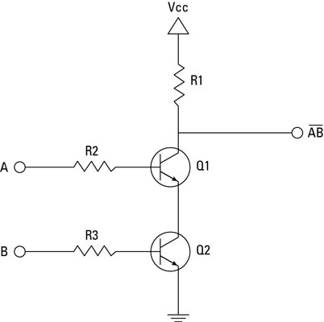
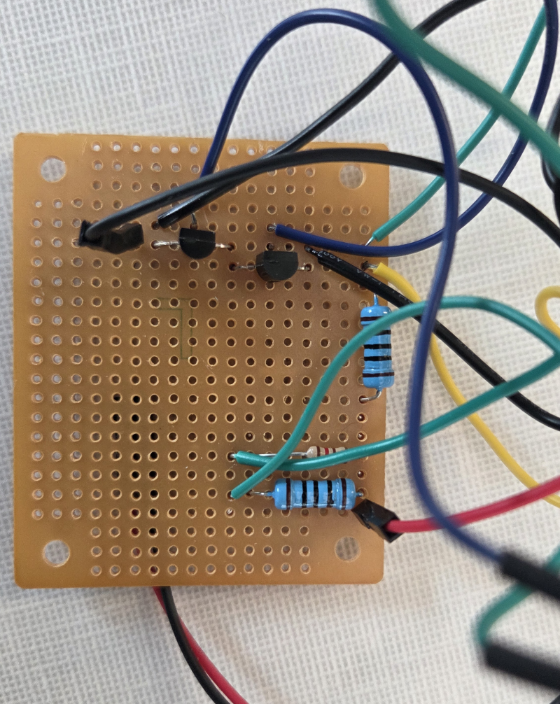
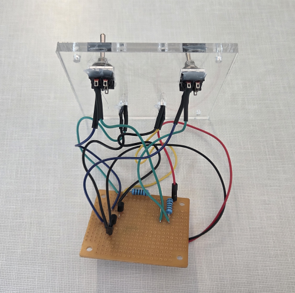

Digital Logic X Ethics
Our project examines how digital logic appears in our everyday technology. What kinds of devices require digital logic, and how much of it? What are the costs of these circuits: environmental, monetary, and human?
Our tech explainer dives into the specifics of how individual logic gates are constructed, and also how they may be put together to create complex behaviors and systems.
We then deconstructed these digital logic circuits from an ethical perspective, analyzing the impacts of manufacturing digital devices from both a Utilitarian and a Rawlsian perspective.
Digital Logic
The technical concept that we approached was digital logic: how do simple digital circuits work, and how can they be layered in order to create complex behavior?
Our demonstration of our technical concept is split into two primary parts. First, how are logic gates made? Then, how are logic gates put together to create complex behavior?
To demonstrate how logic gates are made, we created a physical demonstration of a NAND gate, which is a "functionally complete" gate, meaning that it can be used to create any other kind of gate, and indeed can be used to create any digital logic circuit.
Gates are generally built up from transistors, which are electronic components that are essentially an electronic switch. If the central pin is powered, electricity may flow from the left pin to the right pin. Thus, transistors may be used to create a NAND gate circuit. Place two transistors in series, with their center pins powered by inputs A & B. These transistors will lead directly to ground, meaning that electricity will flow along this path if it is available. We create a second branch as our output path; thus, electricity shall flow along this path unless the direct path to ground is available. The output will only be powered if either A or B are not powered.

Of course, this circuit does not look nearly as neat and tidy when implemented in the real world.


And here's a final physical implementation of a NAND gate using transistors!
Combining together many gates, we can create complex behavior. Shown in the video below are a variety of logical circuits that we created to demonstrate the kind of behavior that can be created using only a few gates. Using only a handful of logic gates, we created an 8x8 bit multiplier.
You can find materials for our tech explainer here. This includes images of the physical NAND gate circuit, as well as the LogicCircuit file containing our complex circuits.
Philosophical Approaches
We approached our topic from the philosophical perspectives of Utilitarianism and The Original Position.Utilitarianism
Thinking through the issue of what devices in our daily lives are worth the difficulty and ethical quandry of their manufacture from a utilitarian perspective seemed to render the problem, at first, relatively trivial. What devices must be 'smart?' What costs are not worth their benefits? It seems deceptively easy to simply consider the upsides, consider the downsides, and then consider their sum value. The tricky part comes in deciding what the values involved actually are. The utility of something like a smart thermostat seems relatively trivially low, but what about something like a FitBit? If it detects a heart attack and saves a life, does that outweigh the environmental impacts of its manufacturing? It was these sorts of questions that a Utilitarian approach led me to ask, and to pursue.
The Original Position
Similarly, thinking through this issue from a Rawlsian perspective also colored my thinking in a new light. If society was gathered in a room behind the Veil of Ignorance, would we collectively decide that some people should ingest toxic metals so that other people can have useless smart devices? I don't think that we would. On the other hand, what devices would we decide are worth it?
Discussions
Our Questions
- If you were in the Original Position, what decision would you make on smart devices? Are smart thermostats worth it?
- Are there technological comforts that should be given up? If so, which ones, and why?
- Is electronic-based technological progress moral?
- What are the Utilitarian costs and benefits of smart devices?
Thoughts on Our Discussion
I was surprised, during the discussion that we led, by how many people seemed reluctant or dismissive towards the idea that we might benefit from giving up the technology we have in order to reduce the suffering caused by its creation. Nearly everyone in the class agreed with this conceptually, that tech should be given up if its utility does not outweigh the suffering it causes, or if society would not agree on its creation if any given individual could not be sure that they would be the user of the technology and not someone working in a factory to create it. However, when asked what tech should be given up, the room went almost silent. I have spent a good deal of time thinking about this since. Perhaps it would be good to give up some of our tech, but what would we be willing to give up?
Thoughts on Other Discussions
I was shocked by how many of the other groups' topics seemed quite relevant to what I had been thinking about for ours. For example, I found that Katherine and Alex's presentation on wearable smart tech and reliablism had a number of connections to our thoughts on ethics. How can we rely on technology when we are so removed from its means of production? It is easy to trust shoes made by ones' friend, but how am I to trust technology made by a hundred hands who may have suffered to create it? How can I rely upon a piece of technology for which I not only do not understand how it was created, but I also don't know what the impact of that creation process was!
References
GeeksforGeeks. (2023, September 11). NAND Gate. GeeksforGeeks. https://www.geeksforgeeks.org/digital-logic/what-is-nand-gate/
LaDou, J. (2006). Printed circuit board industry. International Journal of Hygiene and Environmental Health, 209(3), 211–219. https://doi.org/10.1016/j.ijheh.2006.02.001 - PCB manufacturing
N. Perkins, D., Brune Drisse, M.-N., Nxele, T., & D. Sly, P. (2014). E-Waste: a Global Hazard. Annals of Global Health, 80(4), 286–295. Science Direct. https://doi.org/10.1016/j.aogh.2014.10.001 - E WASTE ARTICLE
Use Transistors to Build a NAND Gate. (n.d.). Mathcenter.oxford.emory.edu. https://mathcenter.oxford.emory.edu/site/cs170/nandFromTransistors/ - nand from transistors
Yin, Y., & Yang, Y. (2025). Sustainable Transition of the Global Semiconductor Industry: Challenges, Strategies, and Future Directions. Sustainability, 17(7), 3160. https://doi.org/10.3390/su17073160 - Sustainable transition of the global semiconductor industry